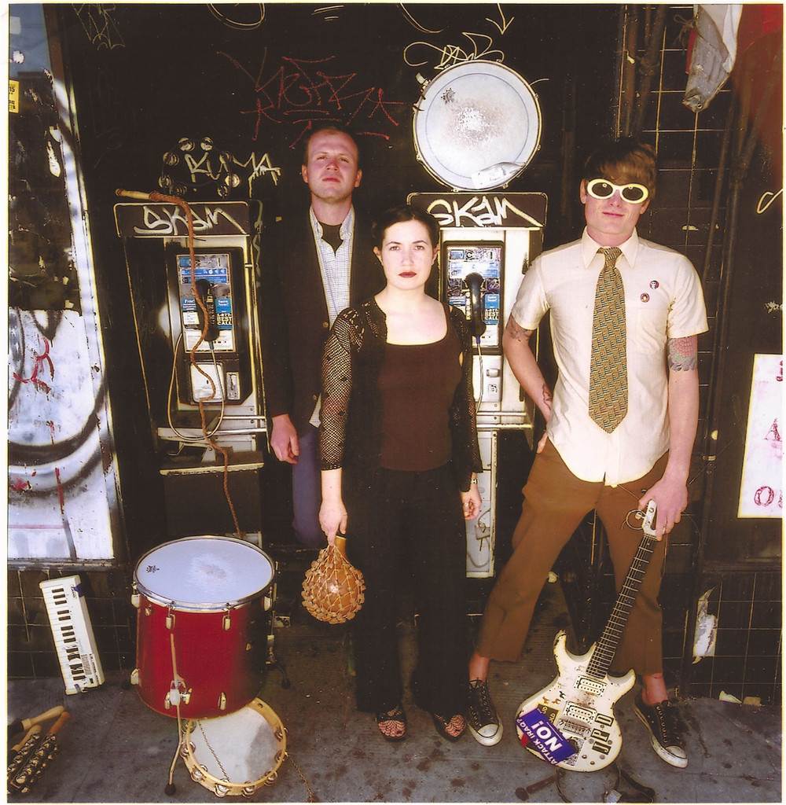

More of this, but this is no longer just a collection of demos!
Vol. 2The first OCS album is all over the place. It is an unpredictable journey through different sounds and textures. If you listen to this you will hear extra-lo-fi recordings of twangy acoustic guitars, undecipherable mumbled vocals, relaxingly weird soundscapes, blasts of electronic feedback, ghosts in a haunted cabin, ghosts taking acid and swimming in the creek on a summer day.
Vol. 1 is divided into two parts, part one, entitled "34 Reasons Why Life Goes On Without You", is ambient, acoustic lo fi psych folk in small bursts of partially formed songs (acoustic portion). Part two, entitled "18 Reasons To Love Your Hater To Death", is primarily made up of distorted synth noise (improvisational portion).

More of this, but this is no longer just a collection of demos!
Vol. 2